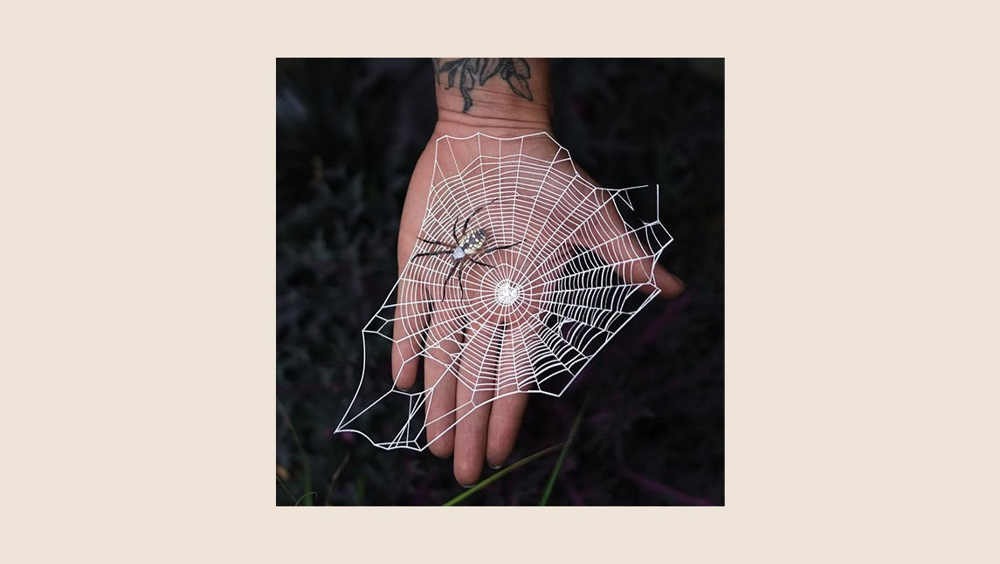

Moth & Myth es un emprendimiento de la amistad entre los artistas Redd y Kari-Lise dedicado a crear figuras de papel. Estas pequeñas artesanías están inspiradas en el mundo natural que nos rodea y todas sus maravillas. A través de la tecnología láser y la impresión avanzada, logran replicar a los extravagantes seres de la naturaleza y darle vida a los simples papeles.
Crean asombrosos enjambres de insectos muy realistas para reemplazar la cacería de la vida silvestre por arte. Ofrecen polillas, mariposas, colibríes y escarabajos, entre muchas especies más, incluso algunas en peligro de extinción, a todo tipo de clientes. Ahora la colección es simbólica y hermosa, libre de maltrato y crueldad.
Todas sus creaciones siguen principios éticos y ecológicos. Se destacan por ser una empresa sostenible y libre de crueldad animal. El trabajo implica siempre una investigación previa del espécimen que se quiere imitar, luego la parte de dibujo y diseño, hasta realizar los últimos ajustes que lleven al gran resultado final.
Su negocio está ubicado en Seattle, se inició en 2015 y se expandió muchísimo desde ese entonces. Hoy en día reciben compradores de todos los rubros y partes del mundo, y van descubriendo cómo cada unx le da su impronta y uso particular a las pequeñas figuras de papel. Desde peluqueros que decoran sus peinados, hasta panaderos que embellecen sus pasteles, las creaciones de Moth & Myth dan vida a cada lugar en el que se posan. Una nueva manera de apreciar la naturaleza y su arte. Adentrate en su maravilloso mundo en @mothandmyth.